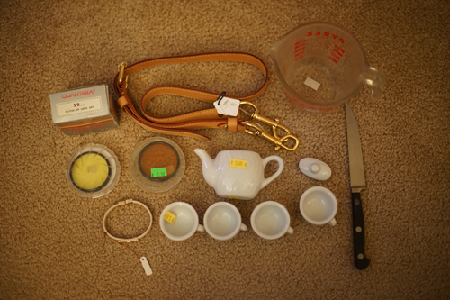
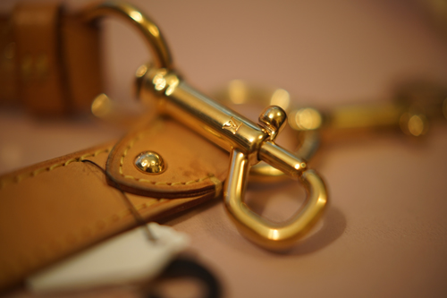

i broke my first thrift store item today. i picked up a bucket of knives from above my head level and one fell out at me. i made the correct decision to step away instead of try to catch it, but it had a porcelain handle that shattered. they didnt make me pay for it but oops...
includes +1, +2, +4. even has a manual and the little case for them
i opened the case to check it out at the store but now its stuck!!! i got it unstuck now..
i dont know who donated the strap to their bag but now i have a very nice strap for my bag. i have no reason to believe this is fake (yet)
the close up filters are pretty fun ngl. im so glad i had the guy reach into the case for them. this store is a bit of a mess and there was a ton of stuff in the way.
+4

+4. What a tiny dof

+4 and 85 filter

+2 and K-2 filter. if you thought my sh*tty lighting was yellow before, you aint seen nothin yet